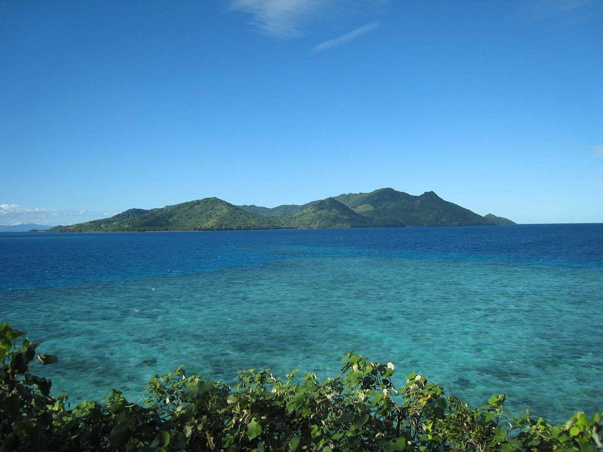

Beqa Lagoon
Viti Levu, Fidji · plongée

Réserve célèbre pour sa plongée avec les requins-bouledogues, encadrée par des locaux engagés dans la protection.
- Lieu
- Viti Levu, Fidji
- Niveau
- Intermédiaire
- Activités
- plongée
- Type d'eau
- Mer / océan
- Coordonnées
- -18.40, 178.12 (position approximative du secteur)
Dangers à connaître
- Grands requins.
- Courants.
Le conseil d'Ocean Buddy
Suis à la lettre le briefing : les requins sont sauvages.
Ouvrir dans Ocean Buddy Télécharger sur l'App Store
Source : Fiche Ocean Buddy · septembre 2026 · à vérifier localement.